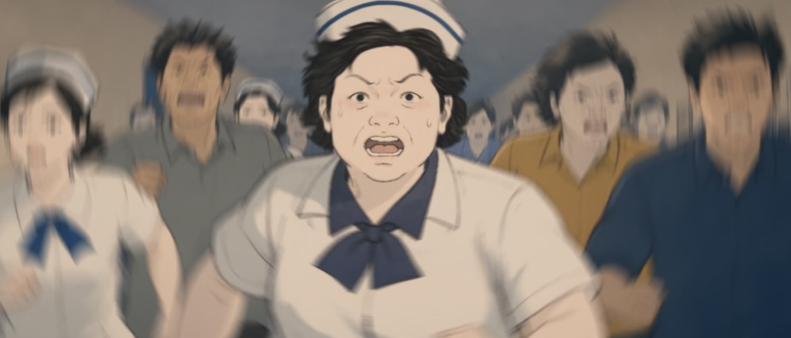

Make your own finish line.
A race. A moment.
A story.
Step onto the track.
One Winner Two Fingers is an animated short directed by Yion, with art by Leray. Explore a glimpse of its world, then take the complete film with you.
- RUNNING TIME
- 12:50
- RESOLUTION
- 2520 × 1080
- FRAME RATE
- 24 fps
- FILE FORMAT
- MP4 / HEVC
Keep the film.
Take the story.
The clean film, posters, English subtitles, director photo, and stills. A look
behind the scenes. Ready to download.


A note on playback
The full film uses HEVC video and AAC audio. If your browser cannot play it, download the MP4 and open it in a compatible media player. English and Chinese subtitles are available separately and in the ZIP. The video has no embedded subtitles. The English playback SRT starts at 00:00:03,375; its timecodes subtract exactly one hour from the Chinese source. The English timeline SRT preserves the source timecodes. Please review synchronization with your screening copy before projection. The ZIP also includes SHA-256 checksums.
Three moments.
One life.
Full-resolution frames from the clean film.
2520 × 1080 · No subtitles or interface overlays.


A wider
perspective.
Inside the
creative process.
Three original production screenshots.
Preserved exactly as supplied.


